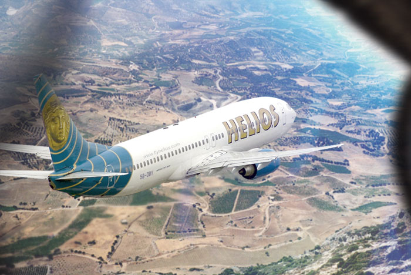
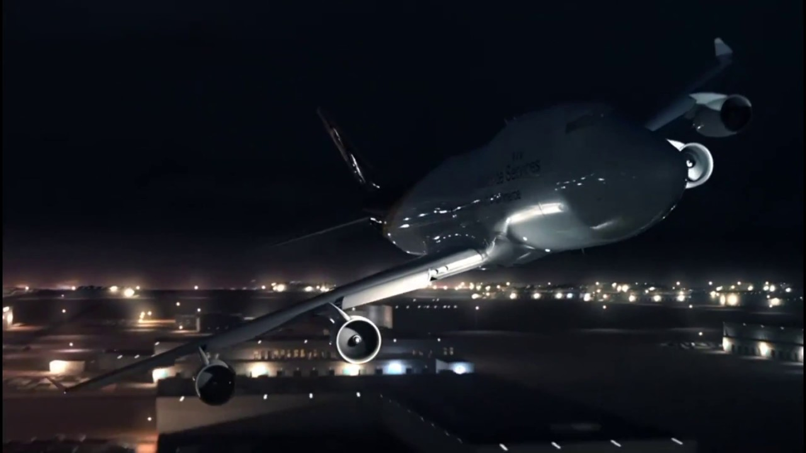

Helios Airways Flight 522 Information
Helios Airways Flight 522 was a scheduled passenger flight from Larnaca, Cyprus, to Athens, Greece, that crashed on 14 August 2005, killing all 121 passengers and crew on board.
Read More about Helios flight 552
UPS Flight 6 Information
UPS Airlines Flight 6 was a cargo flight operated by UPS Airlines. On September 3, 2010, a Boeing 747-400F flying the route between Dubai International Airport and Cologne Bonn Airport developed an in-flight fire, with the fumes and subsequent crash resulting in the death of the two crew members
Read More about UPS flight 6